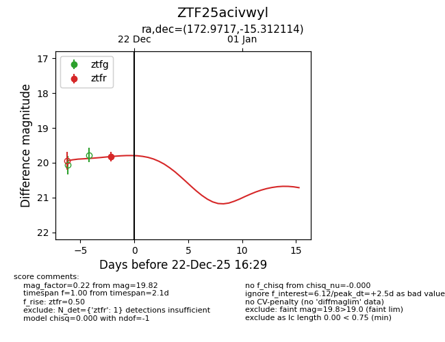
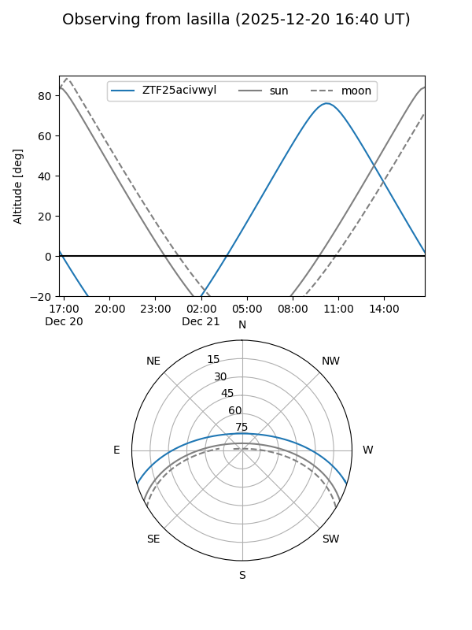
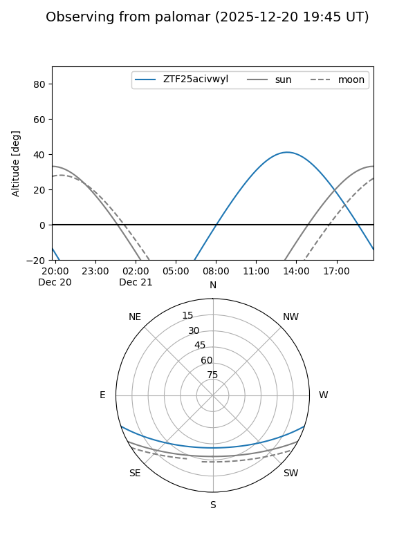

ZTF25acivwyl
Target ZTF25acivwyl at 2025-12-20 16:29
Aliases and brokers:
FINK: fink-portal.org/ZTF25acivwyl
Lasair: lasair-ztf.lsst.ac.uk/objects/ZTF25acivwyl
ALeRCE: alerce.online/object/ZTF25acivwyl
alt names
ZTF25acivwyl (ztf,fink_ztf)
Coordinates:
equatorial (ra, dec) = 172.9717,-15.31211
equatorial (HMS+DMS) = 11:31:53.21,-15:18:43.61
galactic (l, b) = (276.0985,+43.37624)
Flags:
Photometry:
last ztfr=19.82
1 ztfr detections
Lightcurve

Visibility


Additional plots